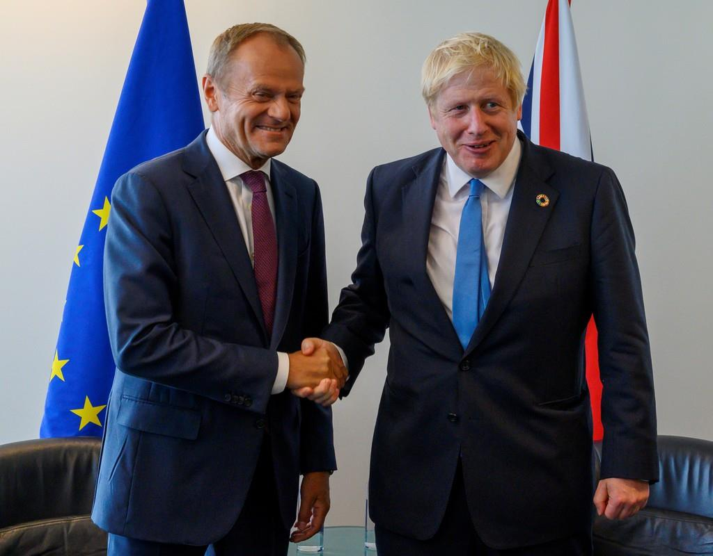

英・EU、修正離脱案で合意
 【ブリュッセル時事】欧州連合（EU）と英国は17日、EU離脱案の見直しをめぐる交渉で合意した。
最大の懸案だった英領北アイルランドの国境管理問題で歩み寄り、妥協点を見いだした。EUは同日の首脳会議で、修正した新たな離脱案を承認する見通し。月末に離脱期限が迫る中、合意が絶望視されていた一時の行き詰まりから一転、「合意なき離脱」回避へ大きく前進する。
今後は離脱案批准に必要となる英議会と欧州議会双方での承認が焦点となる。英政府は19日に英下院に修正離脱案を諮る予定だが、与党・保守党は過半数に満たない上、閣外協力している北アイルランドの地域政党・民主統一党（DUP）は不支持を表明しており、承認を得られるかは不透明。否決されて離脱期限が再び延期される展開もあり得る。
合意を受け、ジョンソン英首相は「主権を取り戻す素晴らしい新たな合意を得た」とツイッターで強調。議会に承認を促した。ユンケル欧州委員長も「EUと英国にとって公平でバランスの取れた合意だ」と自賛した。